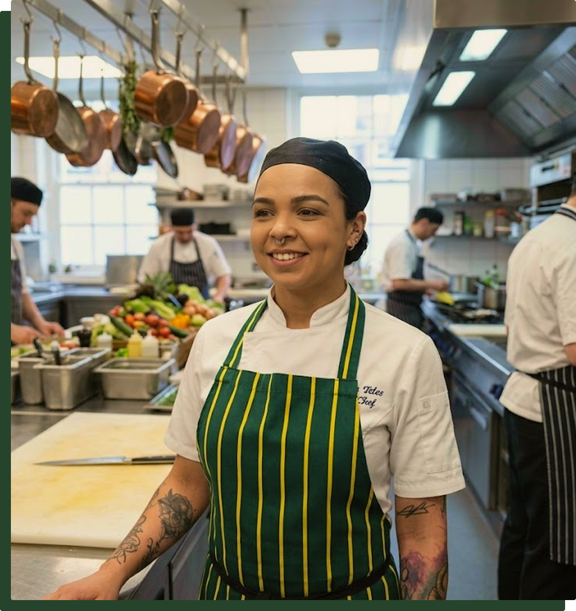
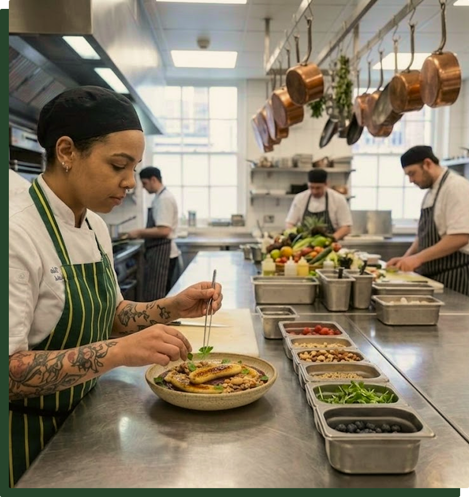

the team
born in brazil, exploring the beauty of canada.
An Award-winning head chef in Brazil, Layana Teles developed her skills through being a private chef for notorious figures throughout British Columbia, until she decided to fully embrace her brazilian heritage and start cooking brazilian cuisine in the north part of the world.


crafted with love
Brazilian cooking is always closely related to the ritual of getting together, sitting down and slowly enjoying a meal with great company.
This thought process is applied to every and single dish we create in our restaurant. Perfectly executed with tradition, with an upscale touch to enhance even more your dining experience.
We hope you enjoy being part of the festive vibrant lifestyle that Brazil has, with the freshest ingredients that Canada is famous for.
browse full menu